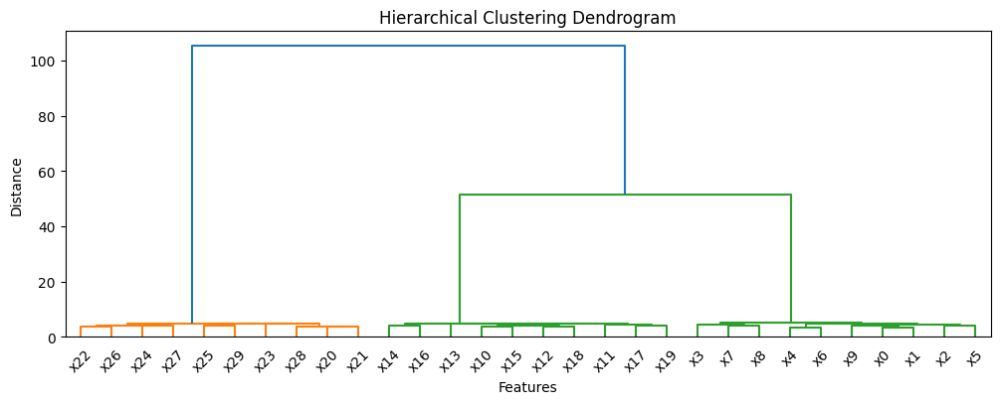

import numpy as np
import pandas as pd
import matplotlib
import matplotlib.pyplot as plt
import warnings
warnings.simplefilter(action='ignore', category=FutureWarning)
import matplotlib.colors as mcolors
colors = list(mcolors.TABLEAU_COLORS.keys())
# colors = matplotlib.colormaps.get_cmap('tab10')
plt.rcParams['figure.figsize'] = (12, 4)
rng = np.random.default_rng(42)
x = np.linspace(0, 10, 100)
date_index = pd.date_range(start='2000-01-01', periods=len(x), freq='D')
data = {}
noise = 1.0
for i in range(30):
if i < 10:
data[f'x{i}'] = np.sin(x) + rng.normal(1, noise, len(x))
elif i >= 10 and i < 20:
data[f'x{i}'] = -np.cos(x)*2 + rng.normal(1, noise, len(x))
elif i >= 20:
data[f'x{i}'] = np.cos(x)*3 + rng.normal(1, noise, len(x))
plt.plot(date_index, data[f'x{i}'], c=colors[i//10])
df = pd.DataFrame(data, index=date_index)
display(df.head())
plt.title('Multiple Time Series')
plt.show()
| x0 | x1 | x2 | x3 | x4 | x5 | x6 | x7 | x8 | x9 | ... | x20 | x21 | x22 | x23 | x24 | x25 | x26 | x27 | x28 | x29 | |
|---|---|---|---|---|---|---|---|---|---|---|---|---|---|---|---|---|---|---|---|---|---|
| 2000-01-01 | 1.304717 | 0.621837 | 1.337575 | 2.727350 | 0.820389 | 2.363862 | 1.515410 | 2.112966 | 0.154955 | 1.389692 | ... | 3.548049 | 4.256659 | 3.460465 | 3.509778 | 3.553931 | 4.553077 | 3.456217 | 4.857210 | 3.740386 | 3.439551 |
| 2000-01-02 | 0.060854 | 2.400067 | 2.508320 | -0.433023 | 1.297615 | 1.996023 | 0.523300 | 0.855778 | 0.017140 | 1.203392 | ... | 3.318831 | 2.270223 | 3.807849 | 3.094688 | 4.964899 | 4.233622 | 5.396025 | 2.872664 | 4.954513 | 2.578208 |
| 2000-01-03 | 1.951100 | 0.844385 | 1.291234 | 2.064477 | 2.021177 | 0.481169 | 2.475096 | 0.169835 | 1.545254 | 1.053206 | ... | 4.373000 | 3.225170 | 4.029790 | 1.176314 | 4.220163 | 4.947658 | 3.851154 | 4.774367 | 4.813267 | 4.960212 |
| 2000-01-04 | 2.238979 | 2.035929 | 1.942353 | 0.969889 | 0.904673 | -0.204090 | 0.670826 | 1.241459 | 1.677694 | 2.886690 | ... | 4.115164 | 4.635184 | 4.468101 | 3.428610 | 3.165753 | 4.347763 | 4.068016 | 5.049452 | 2.881400 | 3.326213 |
| 2000-01-05 | -0.557899 | 0.459519 | -0.657035 | 1.331812 | 1.914304 | -1.571392 | 0.756521 | 2.442310 | 2.680468 | 0.770929 | ... | 2.353649 | 3.478763 | 4.839296 | 4.127798 | 2.892500 | 4.976165 | 4.937395 | 3.969305 | 2.902914 | 3.349541 |
5 rows × 30 columns
from sklearn.cluster import AgglomerativeClustering
display(df.T.head())
clustering_model = AgglomerativeClustering(n_clusters=3)
labels = clustering_model.fit_predict(df.T)
print(f"Cluster labels for the features: {labels}")
for i, label in enumerate(labels):
plt.plot(date_index, data[f'x{i}'], c=colors[label])
| 2000-01-01 | 2000-01-02 | 2000-01-03 | 2000-01-04 | 2000-01-05 | 2000-01-06 | 2000-01-07 | 2000-01-08 | 2000-01-09 | 2000-01-10 | ... | 2000-03-31 | 2000-04-01 | 2000-04-02 | 2000-04-03 | 2000-04-04 | 2000-04-05 | 2000-04-06 | 2000-04-07 | 2000-04-08 | 2000-04-09 | |
|---|---|---|---|---|---|---|---|---|---|---|---|---|---|---|---|---|---|---|---|---|---|
| x0 | 1.304717 | 0.060854 | 1.951100 | 2.238979 | -0.557899 | 0.181672 | 1.697475 | 1.333367 | 1.706161 | 0.935902 | ... | 1.993086 | 1.132275 | 0.708169 | 0.951115 | -0.757448 | -0.617459 | -0.591543 | -0.361846 | 0.943137 | -0.449500 |
| x1 | 0.621837 | 2.400067 | 0.844385 | 2.035929 | 0.459519 | 1.278414 | 0.619612 | 1.310576 | 2.563271 | 0.061625 | ... | 3.051366 | 1.051241 | 0.748280 | 2.492278 | -0.177160 | -0.065074 | 1.374484 | 0.240796 | 0.538241 | 0.292536 |
| x2 | 1.337575 | 2.508320 | 1.291234 | 1.942353 | -0.657035 | 1.435133 | 0.726404 | 0.430796 | 0.844810 | 1.454822 | ... | 1.075723 | 1.383323 | 2.602959 | -1.535825 | 0.693036 | 1.006166 | 1.027151 | 0.263487 | -1.213359 | 0.783974 |
| x3 | 2.727350 | -0.433023 | 2.064477 | 0.969889 | 1.331812 | 0.430953 | 1.235178 | 2.949654 | 2.305618 | 3.521257 | ... | -0.982403 | 1.285114 | 0.659691 | 1.490219 | 1.631840 | 0.967895 | 1.491290 | 0.864613 | 1.073427 | -0.248694 |
| x4 | 0.820389 | 1.297615 | 2.021177 | 0.904673 | 1.914304 | 1.218013 | 1.452092 | 2.479129 | -0.270098 | 0.492473 | ... | 2.412988 | 1.597291 | 0.845218 | 1.484799 | 0.621213 | 1.765200 | -1.100249 | 0.299794 | -1.447449 | -1.039082 |
5 rows × 100 columns
Cluster labels for the features: [0 0 0 0 0 0 0 0 0 0 2 2 2 2 2 2 2 2 2 2 1 1 1 1 1 1 1 1 1 1]
from scipy.cluster.hierarchy import dendrogram, linkage
Z = linkage(df.T.values, method='ward')
dendrogram(Z, labels=df.columns)
plt.title('Hierarchical Clustering Dendrogram')
plt.xlabel('Features')
plt.ylabel('Distance')
plt.show()
